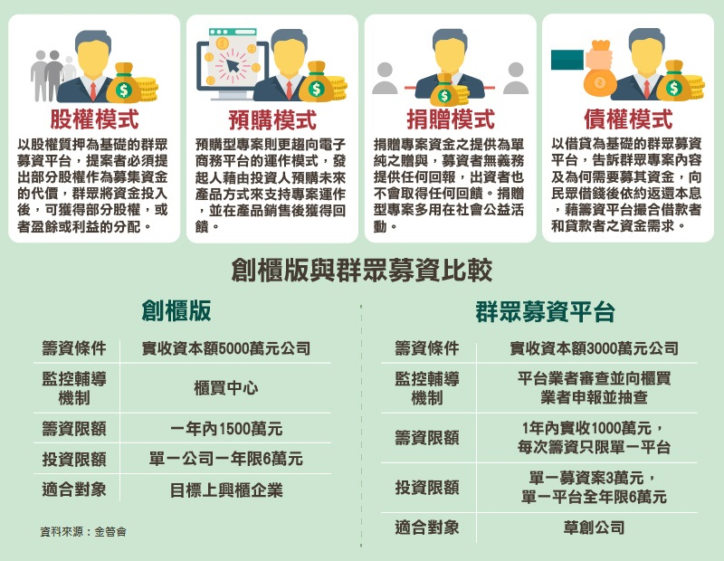
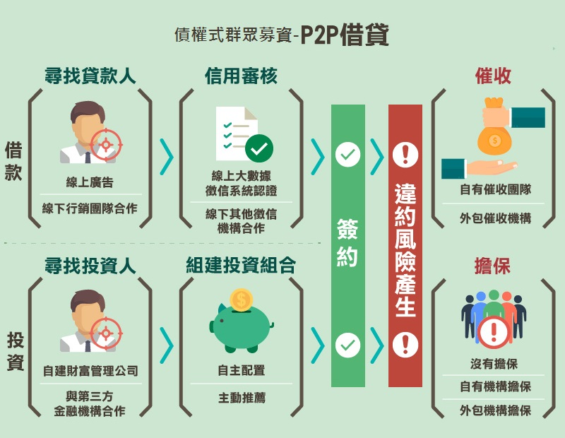

SV Toolbox
Wei-Jung HO // r05247008@ntu.edu.tw
SV Toolbox20181022#1: Introduction[Preview materials][Notes]1. 社企定義與發問2. 社會企業分類[Case study]20181029#2: Pitching new Social Ventures[Preview materials][Case study]20181105#3: Planning Social Ventures I[Preview materials][Suggestion readings][Notes]＊＊＊1. 精實創業精實創業：在反覆試驗中摸索前行萬一開頭就走錯！科學方法之外還需要同理心2. 發現導向式規劃3. 商業模式九宮格4. 價值主張20181112#4: Planning Social Ventures II[Preview materials][Suggestion readings][Notes]＊＊1. 三重底線2. 設計思考20181119#5: Communicating Social Ventures I[Preview materials][Suggestion readings][Notes]＊1. 人物誌2. 使用者故事3. 遊戲化什麼是遊戲化？周郁凱遊戲化的八角理論延伸閱讀20181126&1203#6: RobinFood Field trip & Hanukkah Vacation[Suggestion readings][Notes]1. 動機心理學2. JTBD理論Jobs to be done重要性20181210#7: Communicating Social Ventures II[Preview materials][Suggestion readings][Notes]1. 標竿分析法1.1 前言1.2 定義1.3 類型1.4 重要觀念2. 生意五部分3. 三種產品廣告20181218#8: Facing dilemmas/ failure of Social Ventures[Preview materials][Suggestion readings][Notes]資訊圖表：新創生存率20181224#9: Funding Social Ventures[Preview materials][Suggestion readings][Notes]1. 群眾募資/眾籌2. 盡責調查20181231#10: Measuring performance & impact of Social Ventures[Preview materials][Suggestion readings][Notes]1. 改變理論定義非營利/慈善組織的影響力評估2. 衡量你的社會影響力瞭解改變如何發生，是放大改變規模的第一步衡量社會影響力知易行難？解析 3 大門檻，提供解方助組織走向「知行合一」20190107#11: Sustainability and scaling Social Ventures[Preview materials][Suggestion readings][Notes]1. 永續性2. 規模化20190114#12: Leadership and presentation skills[Preview materials]
20181022#1: Introduction
[Preview materials]
- How to be a social entrepreneur? (by A. Stoll, 18 min - from minute 7:30)*
- Social entrepreneurs: Pioneering social change (9 min)*
- Changing the world through social entrepreneurship (by W. Verloop, 13 min - start watching at minute 6:30)
- Social Entrepreneurship: The case for definition
[Notes]
1. 社企定義與發問
Social entrepreneur (n.) a person who tries to solve social problems using entrepreneurial skills.
- “Social Entrepreneur is not a traditional job, so you have to throw out all of the traditional questions,” Stoll says. “The traditional questions you ask yourself—that I asked myself when I was in your seat as a student—were these two big questions that freak out a lot of people. What do I want to be when I grow up? What am I going to do when I graduate?’ Let’s just get rid of those questions altogether, because I’ve got a better question. If you want to change the world, if you want to do social entrepreneurial work…the real question is what problem do you want to solve in the world? What problem out there just pisses you off? What problem makes you say, ‘Wow that’s frustrating. Why does that even happen?’ That’s how you become a social entrepreneur.”
| Article | 6 steps to becoming a successful social entrepreneur | 5 Clever Hacks for Becoming a Social Entrepreneur |
|---|---|---|
| steps | 1. Find your passion 2. Build a team culture 3. Get started 4. Keep at it (how to stay motivated and persevere in difficult times) 5. Fund your venture & grow organically 6. Scale up | 1. Identify a Social Problem 2. Sign Strategic Partnerships 3. Run It as a Business 4. Make It Fun 5. Stay Committed |
2. 社會企業分類
- 台灣常用的社會企業分類：用商業模式解決社會問題，依據組織傾向和商業/組織目標繪製出第一象限的知覺定位圖如下。

[Case study]
Muhammed Yunus and the Grameen Bank
20181029#2: Pitching new Social Ventures
[Preview materials]
→ Examples of successful Social Ventures:
- The 10 greatest social entrepreneurs of all time*
- The 10 fastest growing Social Ventures in 2016
- 11 Inspiring Examples of Social Entrepreneurs Pitching their Social Ventures
→ Successful Elevator Pitches:
- How to perfect the elevator pitch (1.5 min)*
- Elevator Pitch Winner - for cup ad
- Emotional appeal (5 min)
[Case study]
20181105#3: Planning Social Ventures I
[Preview materials]
→ Lean Startup:
- What is it? (1:45 min)***
- What is it? THE LEAN STARTUP METHODOLOGY*
- Creating the lean Startup (E. Ries)
→ Discovery-driven planning:
- Discover-driven planning: What is it? （中文版點我）***
- Discovery-driven planning: making Social Ventures work（中文版：落實創業五大準則）
- Customer discovery: How to build a startup*
→ Business Model Canvas:
- Business Model Canvas - what is it and why should I use it?*
- Business Model Canvas - in detail*
- How to Write a Great Value Proposition?*
[Suggestion readings]
- 假日書蟲：精實創業讀後感***
- 哈佛商業評論：精實創業改變全世界***
- 創新拿鐵：用「設計思維」玩轉「精實創業」***
- 創新拿鐵：創業圈當紅的精實創業，有哪3點迷思***
- 有物報告：《精實創業》失敗越快，成功越近*
- Cheers：三張圖，找出新獲利模式***
[Notes]＊＊＊
1. 精實創業

精實創業：在反覆試驗中摸索前行
「精實創業（Lean Startup）」，強調在面對高度不確定性的商業環境下，應該快速把「最小可行性產品」丟到市場驗證，然後藉由持續調整找出可獲利的商業模式。
2011年9月，矽谷創業家艾瑞克．萊斯（Eric Ries）發表「精實創業」（The Lean Startup）一書，創業圈從此有了另一番光景。推崇此一科學方法的創業家不再耗費數月研擬鉅細靡遺的營運計劃書，也不刻意追求功能完備的新產品，而是藉由重覆「製造—檢驗—學習」（Build-Measure-Learn）的歷程，推出「最小可行性產品」（Minimum Viable Product, MVP），進而搜集早期顧客意見然後反覆小幅調整，甚或進行關鍵「轉型」（Pivot），大幅改正創業初期的既定方向。
如今很多新創公司採用精實創業。套用Ries的話：「靠著人類直覺在充滿極度不確定性的情況下創造新產品與服務。」為了消除這種不確定性，他們採取「做就對了」（Just do it）的方法。公司可以藉由設定一連串的假設，並在這些假設之中發展出屬於自己的一套商業模式圖（Business Model Canvas），藉此釐清帶給消費者與公司的價值，去創造出有別於混亂之中的秩序。
公司在進行產品開發前，應該事先問過上述那些問題，並實際走出辦公室與顧客接觸，這種方法被稱為顧客發展（Customer Development）。Ries說：「提早接觸顧客的目的不是為了獲得確切的答案。而是為了釐清潛在客戶的需求」。讓公司解決實際問題，並且針對需要的細節加以修改。
在這之後則是進行敏捷開發（Agile Development），這種做法能讓管理者及時給予開發者幫助，在產品更新改良過程中增加人手以利開發。並且不斷針對客戶需求進行修正，做出原型再反覆測試，嘗試讓產品更加進步，藉此節省開發時間。此外，這種做法也能讓產品在被廣泛推出前，就已有穩定客群。

萬一開頭就走錯！科學方法之外還需要同理心
以人為本的「設計思維」（Design Thinking）由享譽國際的創新設計公司IDEO執行長兼總裁提姆．布朗（Tim Brown）提出，原應用於產品設計，但隨著商業環境變得複雜，「設計思維」在種種演變下逐步融入企業文化與商業模式中，應用範圍也越加擴大，尤其面對諸如客戶體驗、情感聯繫等抽象問題時，往往能產生明顯效益。相較「精實創業」，「設計思維」顯得更為柔軟、開放，由同理心出發，帶點直覺，要企業家們再善解人意一些，透過訪談和觀察，站在不同角度仔細聆聽目標顧客的故事，進而尋求創新解決方法，真正地創建一個以客戶為中心的企業。新創企業藉由感性的「設計思維」挖掘目標顧客的潛在慾望，試著體會他們在消費時的真實情境，在此基礎上形成以客為本的創新想法後，快速敏捷地重複「製造－檢驗－學習」循環，盡快把「最小可行性產品」送至目標顧客手上，實際驗證商業假設，並從「失敗」中持續學習、快速成長。

軸轉（Pivot）是一種商業戰略假設的改變，什麼時候需要改變方向？通常新創很難面對軸轉，因此作者建議最好有定期的堅持/軸轉討論會。以下簡單列出幾個作者提出軸轉的變形。
- 推進軸轉（Zoom in pivot），舊產品其中一項功能會被選出來做成新產品。
- 拉遠軸轉（Zoom out pivot），舊產品的整個核心功能變成新產品的一項功能。
- 顧客需求軸轉（Customer need pivot），原本提供的價值可能顧客不是很需要，但因為了解顧客，所以反而發現他們的其他需求。
- 平台軸轉（Platform pivot） ，從應用軟體轉型為平台，或從平台轉型為應用軟體。
- 企業架構軸轉（Business Architecture Pivot），利潤與貨量間的調整與轉型。
- 其他的還有價值擷取軸轉（Value Capture Pivot）、成長引擎軸轉（Engine of Growth pivot）、通路軸轉（Channel Pivot）、科技軸轉（Technology pivot）等。
2. 發現導向式規劃
若想在拉丁美洲、亞洲或非洲等地創業，但缺乏那些環境的可靠資料，就必須集結最好的模式與機制，隨時記下他們的各種假設。但最重要的是，必須根據一連串的檢查點，有系統地測試初步模式的每項假設，並做好隨時應變的準備，透過所謂的「發現導向式規劃（根據新發現來應變規畫）」（discovery-driven planning），以調整做法。如此一來，就能根據新出現的證據採取行動，而不是固執與盲目地追求不可行的目標（見麗塔．岡瑟．麥奎斯〔Rita Gunther McGrath〕和麥克米蘭合寫的〈應變式規畫〉）。
五大準則：
- 準則1：界定事業的約略範圍（具體列出取消創業的條件、界定可接受的門檻、徹底檢視事業所處的經濟、國家、文化環境後，規畫事業的行動規範，這可能包括「不做賒賬銷售」、「不違反母國或地主國的法律」、「絕不行賄」等原則。）
- 準則2：注意社會政治面 在你開始前，必須仔細檢視重要的利害關係人、他們的角色，以及他們可提供的資源。找出受益者（可從事業獲利，但一開始可能存疑而不太願意支持的人）、潛在盟友（最有可能支持專案的人）、中立者（不太可能關心專案，但他們的支持可能是關鍵）、有意義的反對者（會因為專案成功而受害，有手段可阻礙專案進行的人）。有了這樣的分析，你就會知道如何動員支持者，並平息反對者。
- 準則3：強調應變式規畫（時間軸、可能面臨的挑戰）
- 準則4：規畫退出計畫
- 準則5：預期無心造成的結果
3. 商業模式九宮格
- 目標客層：一個企業或組織所要服務的顧客群。 誰是我們最重要的顧客？ 我們為誰創造價值？
- 價值主張：可以為特定的目標客層，創造出價值的整套產品與服務。 我們給消費者的價值是什麼？ 我們能幫助顧客解決什麼問題？ 我們提供給每個目標客層的，是什麼樣的產品與服務？
- 通路：一家公司利用溝通、配送、銷售等通路，與顧客建立起來往的介面，目的是傳達公司的價值主張。 目標客層希望我們透過哪些通路與他們接觸？ 我們的通路如何整合？該如何配合顧客的例行狀況，整合這些通路？
- 顧客關係：一家公司與特定的目標客層，所建立起來的關係型態。 哪些關係是我們已經建立的？要花多少成本？ 這些關係要如何融入我們的商業模式？
- 收益流：成功地將價值主張提供給客戶後，從每個客層所產生的現金（收益扣除成本，所得到的利潤）。如果顧客是商業模式的心臟，收益流就是動脈。必須自問： 他們現在付錢購買的是什麼？現在如何付費？比較希望如何付費？
- 關鍵資源：不同型態的商業模式，所需關鍵資源也不同，它可以是實體資源、財務資源、智慧資源或人力資源。 我們的價值主張、配銷通路、顧客關係、收益流，需要什麼樣的關鍵資源？
- 關鍵活動：必須要有關鍵活動，一個企業才能創造並提出價值主張、進入市場、維繫顧客關係，賺取收益。
- 關鍵合作夥伴：要讓一項商業模式運作，所需要的供應商及合作夥伴網絡。 我們的關鍵夥伴∕供應商是誰？ 哪些關鍵資源是從合作夥伴處取得的？哪些關鍵活動是由合作夥伴執行的？
- 成本結構：運作商業模式會產生的所有成本。 我們的商業模式中，最重要的既定成本是什麼？ 哪個關鍵資源最昂貴？哪個關鍵活動最燒錢？
4. 價值主張

20181112#4: Planning Social Ventures II
[Preview materials]
→ Triple Bottom Line:
→ Design Thinking:
- Design Thinking - Wiki
- More than a feeling: Ten design practices to deliver business value**
- Want To Design Great Digital Experiences? Start Working With Architects
→ Roles in startups:
- Startup roles: Where do you fit in?
- 5 crucial roles in every Startup*
- The 4 roles every Startup should have**
- The 5 people you need for your Startup
[Suggestion readings]
DT-Interaction design.org:
[Notes]＊＊
1. 三重底線

The triple bottom line (TBL) is a concept which broadens a business' focus on the financial bottom line to include social and environmental considerations. A triple bottom line measures a company's degree of social responsibility, its economic value and its environmental impact. TBL is the idea that it is possible to run an organization in a way that not only earns financial profits but also betters people’s lives and helps the planet.
3P = Profit (Economic/經濟/企業營利), People (Society/社會/社會責任), Planet (Environment/環境/環境衝擊)
三重底線：一個企業社會責任的分析框架，同時從經濟、環保、社會三方面衡量企業的標準。
1997年,由國際永續發展權威－英國學者約翰埃爾金頓（John Elkington）率先提出「三重底線」的概念。企業不應不只想著如何將利益最大化，而是始終堅持三重底線原則，或稱作三重盈餘，即企業盈利、社會責任、環境責任三者的統一。若企業只追求盈利，忽略社會和環境責任，企業就有可能走向消費者和全社會的對立面，導致企業無法永續發展，面臨經營風險的重大危機。強調企業的「環境責任」，是因為我們深深體會到環境的脆弱性和對人類的重要性。沒有良好的環境，任何產品的消費都是低質低效的；沒有對資源的節約和迴圈使用，別說是企業，人類的進步也難以為繼。
名詞釋義：
- 「bottom line」就是指公司的淨利潤。哪為何是「bottom line」？這跟淨利潤這一欄的數字於公司收支表的位置有關∶淨利潤這一欄通常是收支表最後的一行，即公司減除所有開支後的淨收入；而公司的收入一欄通常是收支表的第一行（「top line」）。公司增加其收入（generate top-line growth）或降低其成本（cutting costs）都可以說公司正在改善其淨利潤（improving its bottom line）。
- 事實上，把這三個領域中任何一個領域的績效降低到單一數量是不可能的。即使在最常用的「底線」（即凈收入或利潤）一詞的情況下，也沒有人會僅僅根據一些數字對公司進行實際評估。相反，在評估組織的財務績效時，還需要考慮其流動性、償付能力、風險和收益等諸多因素。總之，會幾個不同的財務底線。通過TBL的方法（一些是定量的，一些是定性的）來反映企業績效，以便在經濟、環境和社會方面提供一個企業社會責任對世界產生積極影響的完善圖景。
爭議：如何衡量社會和環境的績效？SROI？
- 企業為追求永續發展，必須在這三方面取得平衡。這也是最近熱門的CSR之前身。但除了第一個Profit，其他兩個People和Planet很難衡量，因此也成為爭議點之一。例如面對濕地保護和瀕臨動物保育，我們可以試著賦予其貨幣價值，但我們如何評估一隻北極熊的價錢？一塊濕地的價錢呢？。很明顯的，沒有明確的標準來判斷這些議題的貨幣價值，因此也無法將People&Planet與Profit對應。
- 有人建議用指數，這樣就是相對的概念了。可以將企業跟產業基數做比較。但明顯的，也沒有標準建議3P以及各個P底下的子P(sub Ps)的權重。有人建議將每個子P獨立出來，分別都建立為一個公制(metric)。例如「濕地創造率」、「北極熊復育率」...。但明顯的，有人馬上懷疑這樣的公製建立必定沒完沒了，缺乏效率。
- 即使企業聲稱自己貫徹TBL，但也有可能是在漂綠（greenwash）。幾乎大企業都稱自己是綠色且環境友善的，但仍有聲音認為事實不全然是這樣。當我們獲得一組企業的數據後，例如：企業有30%高階主管是女性，並捐了1.2%的利潤給慈善機構。我們沒有產業的標準可以比較，我們不知道這些數字到底是「好」還是「不好」。我們也不知道這些企業的底線在哪裡，我們只知道他們的表現，事實上，我們永遠無法得知他們的「底線」到底在哪，如何計算出來。
- 即使有數據，我們也無法像財務報表般加減乘除與比較。例如某企業捐100萬給濕地保育，另企業100萬給偏鄉兒童，還有企業100萬給同志平權團體，到底哪個數字比較優，哪個數字比較劣？即使爭議頗多，但TBL仍可指引企業落實CSR責任，儘管我們不清楚他們貫徹的程度為何。
細節：
Economic Measures - income/expenditures, taxes, business climate factors, employment, business diversity factors.
經濟指標——收入、支出，稅費，經濟環境要素，就業，經濟多樣性要素。
Environmental measures - air and water quality, energy consumption, natural resources, solid and toxic waste, and land use/land cover
環境指標——空氣和水的質量，能耗，自然資源，固體和有毒廢物，用地/土地覆蓋
Social measures - education, equity and access to social resources, health and well-being, quality of life, and social capital
社會指標——教育，平等，社會資源可獲得渠道，健康和幸福，生活品質，社會資源
2. 設計思考
/非讀不可/
/延伸閱讀/
- Understand IBM Design Thinking in 10 minutes: https://lnkd.in/fdJTS5K
- Gerd Waloszek, Introduction to Design Thinking, 2012: https://lnkd.in/f5CZhv2
- Linda Nairman, Design Thinking as a Strategy for Innovation: https://lnkd.in/fixn9Mc
- Herbert Simon, Sciences of the Artificial (3rd Edition), 1996: https://lnkd.in/fwzFraa
20181119#5: Communicating Social Ventures I
[Preview materials]
→ Customer Discovry:
- Get out of the building (by S. Blank)
- There is a wrong way to get out of the building (by C. Lema)
- How to write Agile User Stories?
- From Personas to User Stories***
- 10 Tips to write User Stories***
→ Gamification:
- Gamification: What is it?***
- Gamification Guide: in the workplace*
- Gaming can make a better world (by J. McGonagal)
- Case: The Fun Theory - Piano Stairs
[Suggestion readings]
- 設計大舌頭：如何打造對專案有效益的人物誌 ？***
- 設計大舌頭：體驗地圖與使用者體驗旅程
- 打造人們需要的產品(二)－人物誌Persona*
- 遊戲化 Gamification 入門篇*
- 解析產品令人上癮的秘訣——遊戲化理論架構 Ocatalysis 介紹（上）***
- 原文完整版：Octalysis – the complete Gamification framework
- 《遊戲化實戰全書》八角化理論打造讓人上癮的產品服務【閱讀筆記】*
[Notes]＊
1. 人物誌
人物誌是什麼？
人物誌是一種由研究結果轉畫出來的虛擬人物，常用來幫助我們瞭解不同類型的使用者之間在使用產品，生活態度與行為模式上的差異，近進而開發出更精準對應不同類型使用者的產品或服務，一位人物誌就代表「一群具有相似行為模式及目標的使用者」。要注意的是，人物誌與一般行銷所說的目標族群與市場區隔是截然不同的兩種內涵，行銷上的市場區隔往往是以年齡、性別、職業或收入來區隔（demography）， 而人物誌則是以「行為、相似性」進行分類，幫助我們專注在客觀的行為需求，規劃符合真正人們需要而非我們自己認為很好的服務與產品。
Personas offer a great way to capture the users and the customers with their needs. They are fictional characters that have a name and picture; relevant characteristics such as a role, activities, behaviours, and attitudes; and a goal, which is the problem that has to be addressed or the benefit that should be provided.
面對人物誌，你該注意的是...
- 人物誌的年齡、收入、職業或家庭背景都只是為了幫助我們沈浸故事，不具有意義
- 請專注在行為、目標與價值觀的描述，而非糾結於枝微末節的故事情節上
- 人物誌可在開發中的任何階段利用人物誌，檢視服務與產品是否偏離既定目標
2. 使用者故事
- User stories are a powerful technique to capture the product functionality from the perspective of a user or customer. User stories want to tell a story about the users using the product.
使用者故事（User Story） 是敏捷社群用來描述需求的practice。 它非常容易上手， 但是也容易犯下錯誤， 以下便是常見的問題：
（1）都是使用者
User story 有個範本： As a
也就是說，大家都不區分你的使用者是誰，都把它泛稱使用者。可是這會讓你損失很多了解系統的機會。因為不同角色的人會有不同的考量和需求，並且也會有不同的優先順序，混為一談，只是讓你迷失在一大包功能列表中，而無法掌握重點一刀斃命。
（2）不是從客戶角度出發 本來應該要從不同角色的角度出來，來思考他想要的需求是什麼？可是總是會有些是技術債，或者是product owner自己想要的東西。這些東西不是不能寫，而是要寫的時候，還是要站在客戶的角度，想想客戶會希望你這個東西做成什麼樣子。例如，有些debug log 資訊不完整的技術債，開發人員一開始可能會寫成：「身為開發人員，我要能產生一些debug logs，這樣好讓我再出錯時可以方便除錯。」如果你若是能再進一步從使用這個機制的客戶來思考，他可能要的會是像這樣：「身為開發人員，我要能產生一些可以分層且方便下載的debug logs，這樣好讓我再出錯時可以方便除錯，並且不用看太多訊息，或是收集太大的debug log。」
因為有時候產生debug log不是問題，問題是產生太多，短短時間內就產生了幾G大小的檔案，在某些環境下，你要使用者如何把這玩意下載交付到你手上。所以你如果能換位思考，同一個功能，你做出來會更貼心。
（3）沒有商業價值 另外一個問題，就是沒有撰寫商業價值的部分。當我們沒有這部分的資訊，我們就無法判斷他到底有多急，或者是在該做到多少才足夠。例如：身為系統管理人員，我需要產生日報表。如果只是這樣就呆呆地去實踐日報表的功能，通常出來的都不會是客戶要的。你需要知道這報表出來是要給誰看的，是要那它來做什麼，大多時候我們都是一廂情願的給很多資料，可是你有想過上百頁的報表他會看嗎？或者是有時候客戶也不見得確定他想看什麼資料，或是想交付什麼資料給老闆看，這時候一份固定格式的報表，對他來說效益不大。所以我們需要有商業價值的部分，並且那只是起始點，我們還需要根據這個起始點，來和客戶好好溝通，他們內心真的在想什麼。
（4）沒有驗收條件 寫過使用者故事的都知道，user story只是很簡單的一兩句話，他希望的就是你要去跟利害關係人討論，要去了解他們著遇到什麼問題，要這個功能的動機是什麼。此外還有一件重要的事情，就是要列出驗收條件，也就是定出要做的功能的範圍，如果沒有這個框框，在大家認知不同的狀況下，便會有不同的產出。
例如：身為一個「使用者」，我想要「可以根據關鍵字查詢書籍」，因為「大多數時候我只記得一些關鍵字，這樣對我比較方便。」
是只針對書籍名稱找尋，還是對作者或是書籍簡介也搜尋？此外找出的書目，是根據出版時間，還是根據書籍名稱的字母順序排列？雖然這些功能不見得難做，可是一開始沒有做對，等到事後才來修改，不僅浪費工程師的時間，也讓使用者覺得很不貼心。為什麼不一開始就把驗收條件確認好呢？
3. 遊戲化
什麼是遊戲化？
遊戲化（Gamification）是 2002 年由英國工程師 Nick Pelling 提出，我們看一下這篇文章：
- Gamification is the use of game design elements in non-game contexts 遊戲化是將遊戲的元素放到非遊戲的內容之中
- Gamification is the process of game-thinking and game mechanics to engage users and solve problems 遊戲化是利用遊戲的思考與遊戲的機制讓使用者更容易解決問題
- 簡單來說，「遊戲化」是一種以「人性為中心的設計」（Human-Focused Design），根據人們為什麼做或不做某件事，找到能夠強化人們的感覺、動機和投入程度的誘因去做設計；反之，以功能為中心的設計（Function-Focused Design），則關注在如何提升產品效能、工作效率等，像是自動化或流線化系統，讓整個供應鏈可以更快速的運行。常見的累積點數、蒐集印章、成為「專家」，其實都是「遊戲化」的一種。不過行銷活動遊戲化也不是將積分遊戲（points）、獎勵制度（rewards）、計分板（leader board）等這些元素置入這麼簡單，最重要的是遊戲化的內容可以讓你的主要目標客群買帳，那麼才可稱作是一個成功的行銷遊戲化活動。
周郁凱遊戲化的八角理論
重大使命與呼召（Epic meaning & calling）：意義是會讓人想要付出自己的時間與技能非常重要的一個因素，舉個例子，Teach for Taiwan的劉安婷，她是一位放棄美國高薪回台灣推動偏鄉教育的夢想家，為了偏鄉的教育。Teach for Taiwan的偏鄉師資計畫每一位老師需要到偏鄉進行為期2年的教學。大家可能覺得奇怪，現在不是很多流浪教師嗎？為什麼偏鄉還是沒有老師？因為大多數的人還是會想要留在大城市，所以還是需要這樣有理想的組織，去補足偏鄉教育這個區塊。
- 當一個玩家認為他在做一件很偉大的事情，或他被「選中」做某些事情。典型會出現的情形是，玩家投入很多時間在維持論壇或幫助整個社群的運作，像是維基百科、PTT、Reddit。而當玩家有著「新手玩家的好運」（Beginner’s Luck）時，也會啟動這個機制，人們相信比起其他的玩家，他更有天賦，或是相信他們很幸運就在遊戲的一開始抓到訣竅，是命中註定要來破關的玩家。
進度與成就（ Development & Accomplishment）：點數、徽章與排行榜，這在大部份的網路遊戲，或是實體店家都會嘗試使用的方式，也因為大家被商人行銷的手段教育的很好，也習慣了這樣的方式，就看你有沒有想要參與這樣的集點。
- 這是人們想要更進步、精進技能以及達成挑戰的內在驅力。在這個驅力的狀態下，「挑戰」的設計非常重要，如果挑戰沒有獲得相對應的獎勵就毫無意義。這也是最容易設計和執行的核心驅力，也是大部份PBL系統：積分（points）、徽章（badge）、排行榜（leader board）著重之處。
賦予創造力與回饋（Empowerment of Creativity & Feedback）：提供一個園地可以讓玩家展現創意，例如小時候在玩超級瑪莉的時候，可以得到一個無敵星星，就可以全力衝刺把所有敵人都殺光。
所有權與佔有慾（Ownership & Possession）：從玩家覺得他們擁有一些東西，他們就會自然而然地想要讓他們擁有的這些東西更好（像是裝備的升級），或是去追求更多的東西（獲得更多寶物、打敗更多的敵人、累積更多虛擬貨幣等）。此外，如果玩家花了很多時間在客製化他的人物角色、圖像，他也更容易覺得他「擁有」這個角色。集點換贈品、不同景點的印章蒐集就是利用這個概念。
社會影響與關聯（ Social Influence & Relatedness）：所有與人相關的社會元素，包括：師徒關係、認同、友誼、競爭、敵對等。當你看到你的朋友有一個很厲害的技巧，或是擁有某個很特別的東西，你會不由自主地也會想要像他一樣。這個驅力也包括我們必須會想靠近和我們有關的人、地方、或是活動。比方說，行銷業者透過故事的包裝，讓你在看到商品的時候回想起你的小時候，這樣的懷舊的情節可能會增加你的購物慾望，就是利用這個驅力。
稀缺性與迫切（Scarcity & Impatience）：當你很想要某個東西但你又不能馬上擁有的時候。很多遊戲都有延遲的機制，像是2個小時後你可以獲得在這場戰役裡面的獎勵－但人們其實很想要「馬上」就得到即時的回饋，可是因為無法獲得立即性的報償，讓他們把這件事情掛在心上。Facebook剛推出的時候就是運用這個概念，只開放給哈佛大學的學生使用，接著才開放給其他長春藤的名校，然後到所有的大學。因此當Facebook不再限制註冊者的身份時，人們便一湧而入地註冊，因為在那之前他們早就磨刀霍霍了！
不確定性與好奇心（Unpredictability & Curiosity）：扭蛋就是一種不確定性與好奇心的展示，因為每次投錢之後，掉出來的扭蛋不一定是原先預期的。知名的心理學史金納箱（Skinner Box）實驗，因為出自於不確定性和好奇心，小白鼠沒辦法預測獎賞，所以會更頻繁地按壓槓桿。雖然很多人會錯誤地認為積點、記分板、徽章的獎勵機制是歸類在這個驅力之下。
損失與避免（Loss & Avoidance）：與第二個（發展與成就感）相反，玩家參與遊戲是為了避免不好的事情發生，或是避免先前的努力功虧一簣。此外，當人們認為不趕快行動的時候，他們可能會永遠失去行動的機會，也是誘使行動的主要因素。例如：喝水App如果不喝水的話，App裡面的植物就會枯萎，引導人們養成正確的習慣。
延伸閱讀
- HackMD 共筆：遊戲化（Gamification）
- 遊戲化 (Gamification) 與產品設計實踐：完整案例分析*
- Gamification: Wharton Lifelong Learning Tour by Kevin Werbach
- Octalysis: Complete Gamification Framework by 台灣遊戲化大師周郁凱
- Gamification to improve our world: Yu-kai Chou at TED x Lausanne
- 遊戲化(Gamification)行銷怎麼做？8角分析(Octalysis)教你誘客戶上鉤*
20181126&1203#6: RobinFood Field trip & Hanukkah Vacation
[Suggestion readings]
[Notes]
1. 動機心理學
這部分將補充有關人們的「動機分類」以及其背後的相關心理學研究，心理學當中有兩個大門派，分別為「行為心理學」與「認知心理學」。前者藉由直接觀察受試者，專注於研究人們受到特定刺激而做出的特定反應；而後者專注於人們意識的變化與行為背後的心智處理。
（1）行為心理學 本學派將人的意識視為無法科學研究的黑箱，不去探討結果的成因。而是將研究重點放在「刺激→反應→結果」，單純觀察不同刺激所引發的成效。觀察到人們除了單向接受刺激而反應外，也會看到自己的反應而逐漸修正改變結果。
從此理論我們可以將「觀察、反應回饋循環、強化反應」的概念應用於遊戲化當中。意即在獎勵制度設計上，我們不能期待同一獎勵所造成的結果永遠是一樣的。隨著環境的不同、時間的推移、對象的不同都可能有相異的反應與行為發生。獎勵方式應隨時保持動態調整，以因應人們反應的不斷變化。
由於行為心理學因為只關心刺激與反應的連結而不探討背後的心理因素。有時候會出現盲點與衝突，進而出現之前我們所提過的反效果。
（2）認知心理學 與行為心理學相反的，認知心理學極力探討人們行為背後的心理因素。我們已經知道當人們接觸到回饋、獎勵刺激，大腦會釋放「多巴胺」。這種令人興奮、開心的內分泌物質便是令人持續的動力，甚至是上癮的原因。不管在電玩遊戲、賭博或是滑手機臉書都能見到這些物質。
研究顯示，比起固定的獎勵，人們對於不確定性的獎勵有更顯著的多巴胺峰值某種程度也解釋了為什麼人們這麼喜歡扭蛋、手遊的抽獎活動。我們亦能將此套入獎勵制度，增加變化避免人們的反應疲勞。
心流（mind flow）
談到人們的心理狀態就不得不提到「心流」（flow）的概念。指人們在全神貫注於高技巧活動時，心無旁騖、高度興奮的心理感受。其概念提出者心理學家 Csikszentmihalyi Mihaly 認為有以下特徵：
- 由行為者自主決定從事
- 行為者專心一志而不分心
- 活動有清楚的目標使行為者前進
- 活動有立即的回饋使行為者能立即調整
- 對行為者而言挑戰與技能達到平衡且有主控感
- 行為者從事行為時憂慮感消逝
- 行為者對於時間的消逝感受改變
雖然並非所有遊戲化的目標都適合或能夠達到心流狀態。對於參與者而言，心流確實是實非具有吸引力的心理狀態。將遊戲化的環境調整與心流特徵相似亦有助於使參與者的心理狀態接近一致。
2. JTBD理論
Jobs to be done（JTBD）理論，由以破壞式創新理論聞明的哈佛大學教授 Clayton Christensen 所提出，「Jobs to be done（需要完成的工作）」也為《創新者的解答》一書中最引發讀者興趣的概念。
「顧客」「雇用」了產品與服務以便執行生活中需要完成的「工作」。
從顧客的角度來思考，了解他們在做什麼，也要了解他們為什麼做這些事。把顧客「工作」視為此顧客必須解決的問題，或必須完成的任務。
People don’t want a quarter inch drill, they want a quarter inch hole. 人們不想要一個四分之一英吋的鑽孔機，而是需要一個四分之一英吋的洞。 — Theodore Levitt
鑽孔機只是達成目的的工具，而目的是四分之一英吋的孔洞；「顧客」：人們、「雇用的產品與服務」：鑽孔機與鑽洞、「顧客必須解決的問題或必須完成的任務」：鑽孔、「目的」：四分之一英吋的孔洞。
Jobs to be done重要性
- 了解顧客想解決的根本問題：明確了解顧客在各個面向面臨的問題，並明確指出瞄準的「顧客」(Target Audience)、「顧客必須解決的問題或必須完成的任務」。類似如下的說明：「顧客」需要在「特定情況下」(Job context)去「解決特定問題或完成某項任務」。
- 明確知道顧客的目的是什麼：目的必須夠明確，可以供近一步深入探討。通常「目的」跟顧客如何使用「雇用的產品與服務」有關係。
- 了解有哪些限制性的障礙侷限了解決方案：「目的」所構成條件的反面就是限制障礙，導致部分解決方案被排除在外。例如，四分之一英吋的孔洞，若要一次性鑽到預定的孔洞大小就必須有四分之一英吋的鑽孔機。而其他尺寸的鑽孔機則無法一次性的完成這項任務。
- 了解顧客現行的解決方案：檢視顧客平常可以用來完成工作的不同方法
- 為顧客量身創造新的解決方案：辨識出顧客想要的解決方案與現行的解決方案之間的落差，並提出解決顧客目前尚未能滿意解決問題的取代性解決方案。
20181210#7: Communicating Social Ventures II
[Preview materials]
→ Benchmarking:
→ Value creation:
- Value Creation and 5 Parts of Every Business***
- Creating value is key to the future of marketing (by C. Ross)
→ Crowdsourcing:
→ Persuasive marketing :
[Suggestion readings]
[Notes]
1. 標竿分析法
標竿/基準化分析法（英語：Benchmarking）又稱標竿測試/管理/學習，是指將自己企業的表現指標與業界最佳指標做比較。常見的指標包括品質、時間、花費等。標竿測試通過找出業界中最佳的幾個公司或產品並與自己比較來了解目標公司的表現，並且試圖解釋他者成功的原因。
1.1 前言
在我國最早使用標竿學習觀念者，當推論語中，孔子所說的：「見賢思齊焉，見不賢而內自省也。」、「三人行，必有我師焉，擇其善者而從之，其不善者而改之。」
國際間最早使用「標竿學習（競爭標竿、尺標比較、水平對比）」（Benchmarking）一詞作為管理工具者，當屬美國全錄公司。1982年初，該公司察覺到他們在全美影印機市場佔有的比例，從百分之八十驟降至百分之十三，企業生存出現危機。為拯救危亡，公司推出「品質掛帥」（Leadership through Quality）的策略專案品質計畫；它是由員工參與、學習標竿及品質改進三項重要策略所構成，由於領導者貫徹執行，帶領公司走出困境，終於反敗為勝，並於1989年獲美國國家品質獎的榮銜，而他們所採用「學習標竿」的做法，也成為企業常用的管理工具。
1.2 定義
標竿學習就其字意言，是尋找學習的對象，以他們既有成就為基準 ，透過合法管道學習，以「見賢思齊」的手段，達到改善自己經營體質之目的。換句話說，它是指一家公司可以就某一特定過程，將本身的績效與其他公司的績效相比較，然後學習其中績效最佳者的做法，以達到提升自己績效的目的。我們亦可從以下的標竿學習（Benchmarking）定義中，得知其意涵：
- Collins 英文字典將Benchmark/ Benchmarking解釋為「 固定對象的標記，諸如用石柱來說明高出海平面之高度，作為調查中的參考點」，有基準之意。
- 韋氏（Webster）字典將它解釋為：「標竿為一種調查的指標，做為預定的基本參考點，這個標準可以用測量或評價某些實務。」
- 美國生產力與品質中心（APQC）：「標竿學習是一項有系統、持續性的評估過程，透過不斷地將企業過程與世界上居領導地位之企業相比較，以獲得協助改進經營績效之資訊。」
- 美國全錄公司：「持續有系統地評估頂尖企業的一種過程，以確認最好的業務運作方式，並據以設定合理的自我表現目標。」
- 美國教育部：「持續地衡量其產品、服務及運作方式，並與最佳競爭者或產業界的領導者相比較。」
由此可知，標竿學習是一種向企業實務楷模學習的過程，它可以向同業學習，也可以向異業學習，這種學習過程要靠人來推動，惟有人人參與，標竿學習的策略才能成功。綜上所述，我們可將標竿學習歸納為下列幾個重點：
- 是一種廣受歡迎能促進進步的管理工具。
- 重視過程與實務。
- 可以辨識出最需改變的過程。
- 重在全員參與。
- 可比較自己公司的過程或績效與一流公司的過程或績效。
- 目標是找出成功的秘訣，然後應用在自己公司。
1.3 類型
標竿學習是以「知己」的方式，來檢驗自己，也以「知彼」的方式，來瞭解競爭對手，從而得知，自己到底與競爭對手的差距有多少。一般來說，標竿學習因對象和範圍的不同可分成四類：
- 內部標竿（Internal Benchmarking）：係指企業內各部門、工廠、分公司、間之某一類似作業過程或工作方法，彼此相互觀摩學習，找出組織內不同部門間的績效差異，進行改善。
- 競爭標竿（Competitive Benchmarking）：係指向競爭對手學習，將其營運有關的重要項目，與競爭對手進行標竿研究比較，比較的項目包括：產品之品質、價格、生產/服務過程、績效等，擇優學習。
- 機能標竿（Functional benchmarking）：它係針對某一機能或過程之改善目的而設。先定出某些企業機能領域，諸如：生產、行銷、財務、服務…等的績效衡量標準，而後尋求在此特定領域內表現卓越的其他組織，將它與企業本身比較，分析其作業過程之優點與績效差距，達到改善績效的目的。
- 一般的標竿（Generic Benchmarking）：係指將創新的學習方法，運用到過程或策略的改善，它代表的意涵是專注於學習卓越的作業過程，不論其存在之行業或產業別。例如全錄公司向AT&T學習R/D，向美國快遞學習收款，向密立根公司學習員工提案制度等等。參考最佳者的作業系統，建立自己的功能目標，整合策略，使自己成為最佳者。
1.4 重要觀念
欲期有效運用標竿學習作為管理工具，須先建立四項重要觀念，即：「全面品質觀」、「過程觀」、「衡量標準觀」與「學習觀」，茲略述如次：
- 全面品質觀：係指標竿學習的基本理念之一，在於達成顧客的全面滿意；
- 過程觀：係指標竿學習所涵蓋學習對象的作業過程，以及組織內部的運作流程與計劃流程；
- 衡量標準觀：係指標竿學習須訂出某些組織功能上共同績效衡量標準，作為比較之依據；
- 學習觀：係同時強調向他人學習與自我學習的精神。
我們須將以上四種觀念作為實施標竿學習的基本原則，不可僅將標竿學習簡化為向他人學習的方式而已。我們也要瞭解，應將標竿學習視為持續的學習過程，不斷地進行創新與改善來提升組織效能，以增強競爭優勢。
2. 生意五部分

3. 三種產品廣告
- 產品廣告（product advertising）：所要推廣的是廣告主的產品或服務。依廣告目的，可再區分告知式、說服式、與提醒式三種產品廣告：
（1）告知式廣告（informative advertising）：用於要推廣全新或經過改良的產品，增加消費者對產品的知曉與瞭解程度。許多訴求「最新配方」、「獨家技術」、「全球首發」的廣告，都屬於告知式廣告。
（2）說服式廣告（persuasive advertising）：為了加強品牌偏好、促進品牌轉換，刺激消費者欲望與購買等，會強調品牌或產品的特色與優點，多使用在產品成長期與成熟期。某些說服式廣告會以間接或直接指出自己比競爭品牌優秀，而成為比較式廣告（comparison advertising）。
（3）提醒式廣告（reminder advertising）：當品牌已經被多數目標消費者接受與肯定，並產生品牌忠誠度時，廣告的目的轉變為提醒消費者，避免消費者對其品牌印象有所模糊或淡忘。這類廣告常出現在產品成熟期、甚至是衰退期。
20181218#8: Facing dilemmas/ failure of Social Ventures
[Preview materials]
→ Failure reasons &lessons:
- 20 Reasons startup fail*
- Lessons from a failed entrepreneur*
- Social enterprises go bust all the time*
- The Ultimate Startup Failure Rate
- Why social impact startups are set to fail?
- 75% of startups fail, but it's no biggie
→ Pivot &bouncing back:
- How 5 entrepreneurs bouncing back after failure
- 7 Step Problem Solving (by E. Muzio)
- Pivot = A change in "strategy" without a change in "vision." (by E.Ries) *
- 5 keys to success for social entrepreneurs (by L. Pareras)
- A narrative approach to understanding venture failure stigmatization
- Three rules for making a successful pivot
[Suggestion readings]
- The Art of the Pivot
- Do Pivots Matter? Yes, in Almost Every Case
- Pivot or Persevere? The Key to Startup Success
- 能撐過前五年的新創公司只有1%—談創業家的七種死法
[Notes]
資訊圖表：新創生存率

20181224#9: Funding Social Ventures
[Preview materials]
→ Crowdfunding:
- What is Crowdfunding?
- Why are people motivated to post and fund projects on crowdfunding platforms?*
- The ten crowdfunding platforms of 2018
→ Due Diligence:
- What is Due Diligence?***
- BCG - M&A and Divestitures
- How to conduct Due Diligence?
- Types of Due Diligence*
- Case Study Due Diligence
[Suggestion readings]
- 群眾募資的現實面貌：不是集資，而是行銷***
- 【5 分鐘 Fintech】群眾募資是創新搖籃，更考驗民眾智慧
- MBA lib：財務盡責調查、商業盡職調查
- 科技律師 (vi)：執行Due Diligence之專業與格調
- 募資 – 3, 了解Due Diligence (DD，投資風險評估) 的過程
[Notes]
1. 群眾募資/眾籌
群眾募資，又稱群眾集資、公眾集資、群募、公眾籌款或眾籌，是指個人或小企業通過網際網路向大群眾募資集資金的一種集資方式。群眾募資主要透過網際網路展示宣傳計劃內容、原生設計與創意作品，並與大眾解釋通過募集資金讓此作品量產或實現的計劃。支持、參與的群眾，則可藉由「購買」或「贊助」的方式，投入該計畫以實現計劃、設計或夢想。在一定的時限內，達到事先設定募資的金額目標後即為募資成功，開始使用募得的金錢進行計劃。


當台灣人在思考群眾募資的時候，我們要面對幾個現實：
- 群眾募資 不會解決台灣新創團隊的資金問題，這必須要從資本市場去改變（美國也一樣）
- 更重要的是， 群眾募資 不會創造更好的新創公司，這必須要從環境去改革
- 以台灣目前的新創環境與科技產業規模而言，過度於寄望群募而讓更多新創公司的資源投入 PR，無助於解決問題
最最最重要的是，
- 群募可以是非常重要的預購平台。台灣目前的科技產品多難銷至歐美國家，若能了解歐美群募平台的生態，台灣的 B2C 公司可以透過群募管道進入歐美市場。（以可行產品為前提
2. 盡責調查
「Due diligence」是財務、投資與工程都常常使用的字，翻譯成「盡職調查」，通常就是在行動（買賣、投資）前要做好的各種準備。承襲我們台灣人喜歡說字母的習慣，這個步驟通常被簡稱為 DD。簡單說就是做重要決定之前應該要做的功課和檢核。原子筆要拿起來在旁邊的廢紙上寫幾個字看順不順，房子要看權狀看風水還要打聽會不會是凶宅… 這些，其實都是DD。”Due“ 原本指的是「適當的、合理的」，而 ”Diligence” 則是「注意、勤勉」；交易上用白話文講，就是「買之前要小心把貨看清楚、和賣方把話講清楚」。
編按：盡職調查（Due Diligence Investigation）又稱謹慎性調查，一般是指投資人在與目標企業達成初步合作意向後，經協商一致，投資人對目標企業一切與本次投資有關的事項進行現場調查、資料分析的一系列活動。其主要是在收購（投資）等資本運作活動時進行，但企業上市發行時，也會需要事先進行盡職調查，以初步瞭解是否具備上市的條件。
- “Due diligence” is just the fancy name given to the research process that is carried out prior to making an investment. It usually involves an investigation into a person or people, a business, or a marketplace.
20181231#10: Measuring performance & impact of Social Ventures
這一單元可以直接看推薦閱讀中，社企流的專題報導。
[Preview materials]
→ Social Impact Measurement:
- Why measure social impact?*
- The challenges of measuring social impact
- Social Impact Measurement (SIM) Assessment Overview***
→ Theory of Change:
- Measuring your social impact - Theory of Change**
- How to think about and measure Non-profit impact? ***
- How to measure outcomes?
- How social entrepreneurs begin to measure impact
→ Social impact metrics:
- Social impact metrics***
- 8 Social Impact Metrics you Need to Know About
- MaRS: Social Impact Metrics Guidebook
[Suggestion readings]
- 社企流：衡量你的社會影響力專題＊＊
- 企業的社會價值該如何衡量？＊
- 社會影響評估要回答的九個問題
- Theory of Change Basics: A Primer on Theory of Change
- 社會創新，到底是創什麼？（一）：我們創造的是一種新的社會影響
[Notes]
1. 改變理論
定義
改變理論（英語：Theory of change = ToC），是一種為了企劃、參與決策與評量之特別型態的方法學，被用於慈善、非營利與政府之諸部門以促進社會變化。改變理論先定義長程目標，然後倒推規劃確認其必要諸條件。
- 改變理論以描繪短程、中程、常程效果之原因連結輪廓，解釋在某一倡議之變化過程。已確認的變化，以效果路線規劃，顯示每個效果與其他效果的邏輯關係與時間流程。解釋效果之間的連結之理由或論述為何此效果是另一效果的預備條件。
- 改變理論之創新在於「區別想要與實際效果的差異」，以及「在他們決定介入形式以達到那些效果之前，要求諸利害關係人先形塑其所想要的效果」。一般會錯誤描述「改變理論」只是一種企劃與評量的方法學。「改變理論」是一種批判理論，可以保障權力動態之透明性分布。進而，其過程必須包容在達成解決方案之許多觀點與參與者。
- 「改變理論」依照預期用途，可以開始於某一倡議之任何階段。理論首先發展於通知某一倡議之企劃時是最好。已經制定了某一改變模型，參與者可以對策略與戰術作出更加知情的決策。若可以獲得監測與評量的數據時，當數據證據顯示時，諸利害關係人可以定期改善「改變理論」。「改變理論」可藉由閱讀方案數據、訪談諸利害關係者與分析資料，作回顧式發展。此常被作，當評量反映出何者是已作與何者是未作時，以理解過去與策劃未來。
非營利/慈善組織的影響力評估
- Measuring the impact of a nonprofit/charity can be a massive challenge. Social change rarely fits into a nice buckets that can be tracked. These three sections represent the larger strategy of the organization, the theory of change, and the practical performance measurement. This outline compresses a lot standard nonprofit planning documents in attempt to distill the mission critical thinking needed to get started. Each area has questions a nonprofit should discuss and answer as a team.
Purpose and Intent: Determine purpose of the organization.
- What is the long term goal?
- What need in society drove the creation of this organization?
- What would need to happen for us to (successfully) go out of business?
Defining Outcomes and Indicators: Identify outcomes that demonstrate impact.
- What specific changes and outcomes will demonstrate the success you outlined above
- Outline Key Impact Indicators — (warning it’s hard)
- What indicators will you use to measure those specific changes?
Track indicators over time: Choose the methods you will you use to track each indicator. No matter which types of indicators, make sure results are stored in a consistent way in an online database. Tracking and analyzing is an important role, make sure there is someone who’s job it is to do this, preferably a data analyst.
2. 衡量你的社會影響力
面對複雜的社會議題，我們怎麼知道自己如預期般帶來正向改變？又該怎麼尋找有效的行動切入點，把資源花在刀口上？若你曾嘗試回答這些問題，其實你已經站上了衡量社會影響力的起點。雖說動心起念相當單純，卻因為社會影響力主觀、難以被界定與衡量的性質，導致想要回答上述問題一點都不容易。也因此，形形色色方法論和工具應運而生，希望協助使用者辨識、分析與衡量組織影響力。
不論是哪種方法論，大多是希望提供「一套好上手的工具」、「一個新的審視角度」和「一種便於溝通的語言」，引導組織思考，自身行動是在什麼機制之下帶來多少改變、哪些機制能最大化投入資源的效益、以及如何和他人闡述、分享累積的學習與成果。
瞭解改變如何發生，是放大改變規模的第一步
可能有人會好奇，難道不衡量社會影響力，就代表沒有影響力嗎？
當然不是。許多社會目的組織（Social purpose organization，泛指以實現公眾利益與社會價值為目標而設立的組織，以下簡稱組織）為了改善社會問題，積年累月地投注心力，在各自的領域累積了深厚的知識與執行經驗，除了在第一線服務之外，亦成為該領域的前輩，是不少年輕團隊諮詢請益的對象，他們的影響力不會因為不衡量、不言說就消失。
然而，衡量、評估影響力仍有其積極意義，代表組織願意主動探究其行動模式是否能有效率地達成目標，進而解決社會問題。
主動衡量影響力表示抱持社會使命而成立的組織，基於兌現組織宗旨的承諾，以及因標榜理念而接收到的社會支持，願意以當責（Accountable）的態度面對員工、產品使用者、消費者、受益者等利害關係人，在能力所及的範圍內追蹤、評估、分析組織為社會帶來的改變，適當地與利害關係人分享資訊。
而在功能面上，持續追蹤、衡量影響力能協助組織持續改善內部方針，以及讓組織的行動和表現被外界檢視，達到內部「改善」（Improving）與外部「證明」（Proving）兩大效果：
- 內部改善（Improving）：好的評估工具能引導使用者釐清影響改變的關鍵因素和因果邏輯，進而自我診斷，找出以往忽視的盲點。如果能辨別出確實能解決問題的機制，組織便能更專注在有效的方法上，以同樣的資源，創造更大的效益。或者，組織也可以透過向外分享這些知識，讓更多人加入改善問題的行列，放大改變的規模。
- 外部證明（Proving）：如今大眾參與公益的方式相當多元，如消費支持、捐款支持、擔任志工、揪團加入群眾募資等選擇，讓許多支持者在面對個人有限的公益資源時（如時間、捐款額度、消費預算等），常常不知該如何抉擇。因此，除了組織的成立宗旨和理念，現在有更多支持者想瞭解自己投入的資源將如何被運用、能創造多少改變，以此作為決策考量之一。而評估的結果即是組織很好的溝通素材。
衡量社會影響力知易行難？解析 3 大門檻，提供解方助組織走向「知行合一」
當組織能明確展現成果、闡述改善問題的機制，除了展現組織無論表現好壞，都有揭露與承擔的責信精神，亦能以具體成果說服他人，證明組織標榜的願景並非空話，而是具體可實現的未來。
當組織想自行衡量社會影響力時，會遇到的阻力與考量包括：（1）專業門檻高，小組織難執行、（2）成本高昂，效益未知、（3）不夠緊急也不夠重要，執行順序往後排。
該如何破解上述 3 個門檻？以下 3 個建議，提供給想要執行影響力評估的組織參考。（1）回歸使用需求，選擇當下最適合的評估方法、（2）尋找呈現影響力的最佳方式、（3）能從今天開始，就不要等明天。
20190107#11: Sustainability and scaling Social Ventures
[Preview materials]
→ Sustainability:
- What is it?*
- Two keys to sustainability （中文版：讓社會企業永續經營）*
- Financial sustainability for social ventures
- Sustainability explained (4 mins. video, 9 mins. in detail concepts)
- Best practices in sustainability: Ford, Starbucks and more cases
→ Scaling:
- Scaling social enterprise
- Challenges of scaling up*
- Scaling your company I: Starting to scale*
- Scaling your company II: Choosing a growth strategy
- How social ventures can build scalable models
[Suggestion readings]
[Notes]
1. 永續性
- 定義：滿足當前世代的需要，且不要損害後代子孫滿足其未來需要的能力。
- 當代在探討世代正義時，最常引用「布蘭特報告（Brundtland Report）」中 永續發展的定義，即 「人類的發展能夠滿足當代的需求，且不致危及到我們的 子孫滿足其需要的能力（Development that Meets the Needs Of the Present, Without Compromising the Ability of Future Generations to Meet Their Own Needs.）。」
2. 規模化
2007 到 2013 年，可以說是台灣社會企業有了些成果的第一階段。為什麼這麼說？第一，媒體開始有報導，重量級的企業家，例如施振榮先生也出來大力倡導，大家對社會企業開始有了解；第二，社會企業模式也更多元，像是《大誌》（以遊民為扶助對象的文創媒體）、「以立國際」提供國際志工服務，還有，勝利潛能開發中心從非營利組織轉型，甚至開了全台第一家身心障礙團隊經營的便利商店；第三，大家對於社會企業也有了更多參與。
2013 年之後，可以說是第二階段，我非常關心的是，究竟台灣的社會企業以及它們想做的事，能不能夠「規模化」（scalability）。什麼是規模化？我舉一個例子， 印度有一家小公司叫 d-light，它生產的太陽能電燈做得很便宜，14 美元一個，消費者買了它的燈，白天放在太陽底下蓄能，晚上就可以發電發光。
社會企業的定義，同時兼有公益性與商業性。從公益性看，全球有數十個國家沒有電網，d-light提供的燈可以大量滿足需求；從商業性看，它在富裕國家用比較高的定價賣一個燈，就可以有利潤用比較便宜的價格在窮國提供商品。它不用募款、不靠捐贈，透過市場機制，就可以同時達成公益與商業需求。從這個角度看，它是個很好的社會企業。那麼，d-light 是不是一家可以規模化的公司呢？只要能找到工廠幫它生產、只要找到市場，它的模式就可以複製，不會因為要放大規模而必須要投入等倍的資源。它是可以規模化的社會企業。
20190114#12: Leadership and presentation skills
[Preview materials]
→ Leadership:
- What is leadership?
- Leadership and management in social enterprises
- Managers and Leaders: Are they different? （中文版）
- Management vs. Leadership
- Leadership vs. Management
- What social sector leaders need to succeed
→ Presentation skills:
- Presentation skills
- Top tips for improving your presentation skills
- How to give a great presentation?